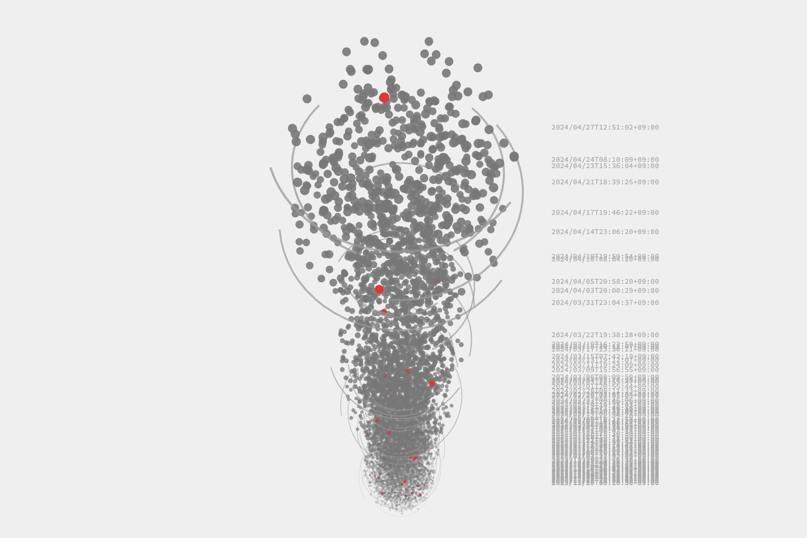
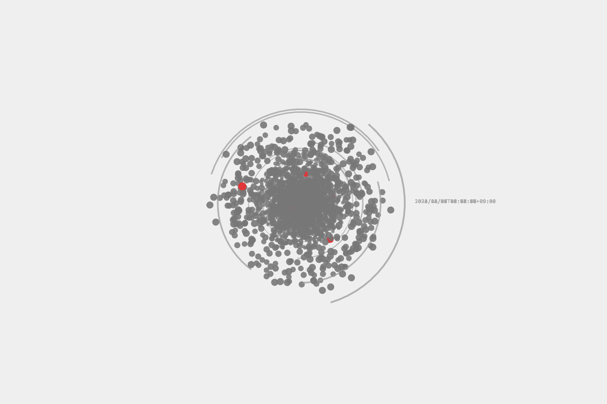
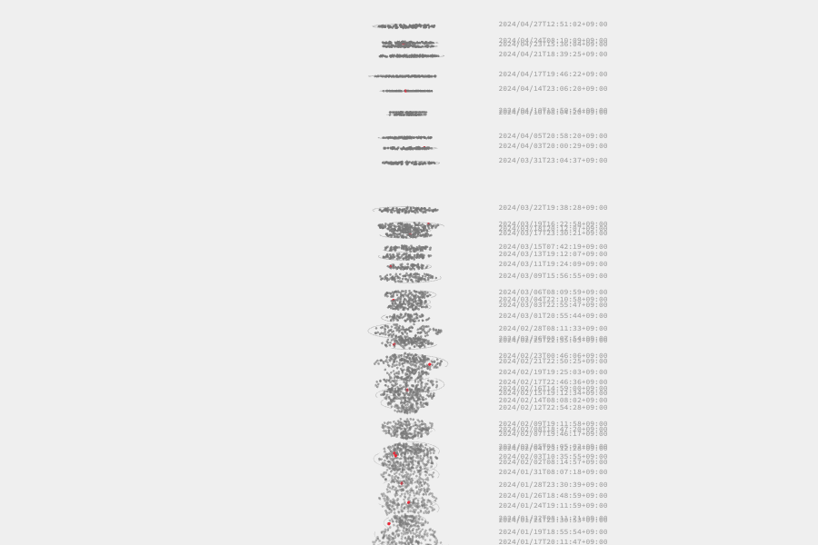
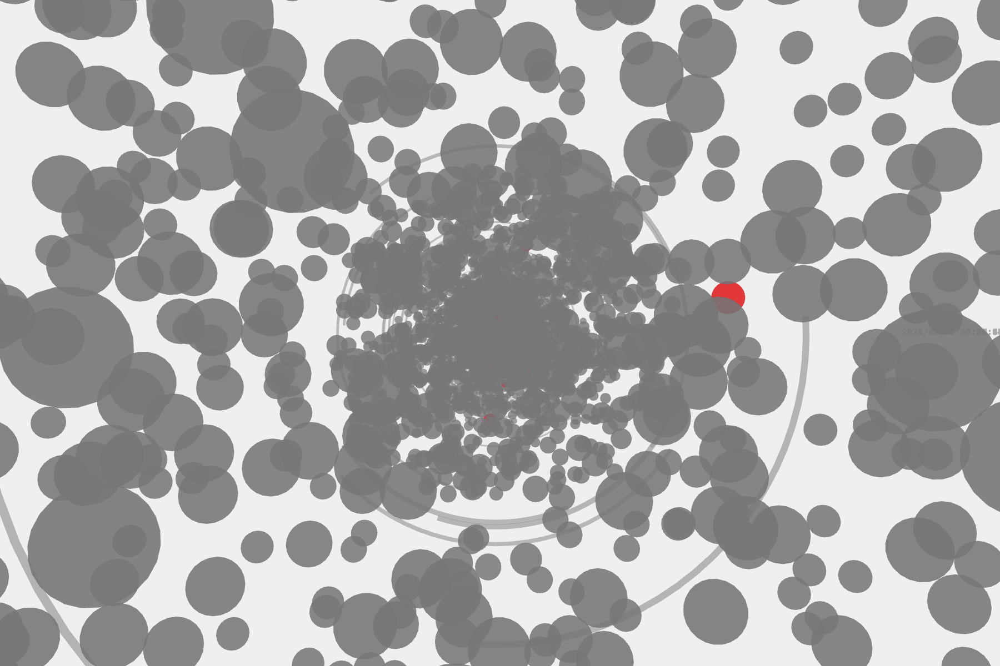

onu
ひとつの ー。
2024.06 / Media Art

https://onu-onu.github.io/statueoftrafficaccidents/
東京都の交通事故被害者数を可視化したバーチャル彫刻
作者が交番の前を通るたびに交番に掲示されている交通事故被害数のボードに書かれた情報を記録したデータをもとに作成した作品。 データ収集から視覚表現の設計、コーディングまで行った。